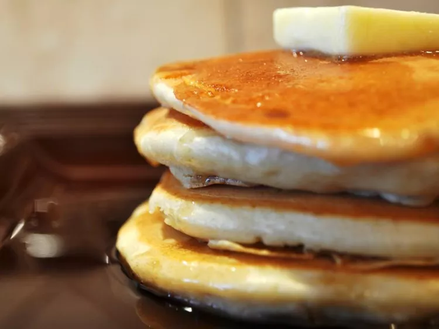

Pancakes

Top these fluffy pancakes with maple syrup for a sweetly satisfying breakfast.
They also pair well with homemade whipped cream or homemade blueberry sauce.
Ingredients
- 3/4 cup milk
- 2 tablespoons white vinegar
- 1 cup all-purpose flour
- 2 tablespoons white sugar
- 1 teaspoon baking powder
- 1/2 teaspoon baking soda
- 1/2 teaspoon salt
- 1 egg
- 2 tablespoons butter, melted
Steps
- Combine milk and vinegar in a medium bowl and set aside for 5 minutes to make sour milk.
- Combine flour, sugar, baking powder, baking soda, and salt in a large mixing bowl.
Whisk egg and butter into soured milk.
Pour flour mixture into milk mixture and whisk until lumps are gone.
- Heat a large skillet over medium heat, and coat it with cooking spray.
Pour 1/4 cupfuls of batter onto the skillet,
and cook until bubbles form and the edges are dry, about 2 to 3 minutes.
Flip with a spatula, and cook until browned on the other side.
Repeat with remaining batter.